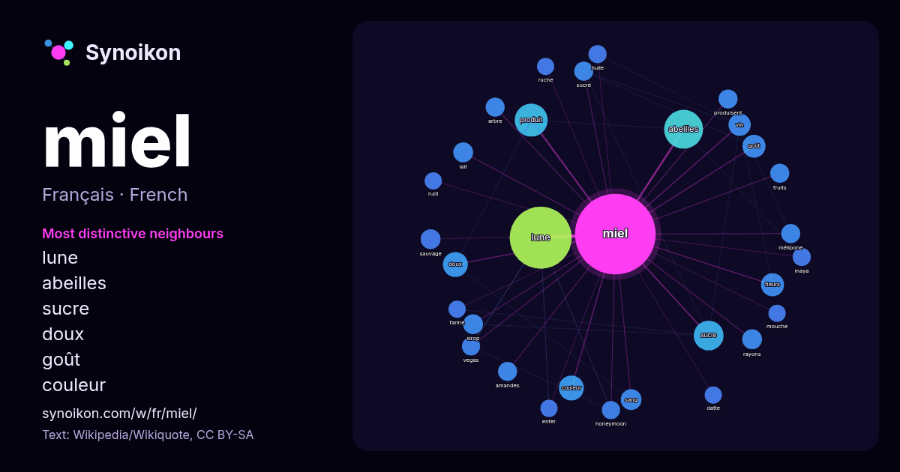

Français · liste des mots du jour
miel
“honey” · Les mots trouvés autour de lui dans 952 occurrences issues de Wikipédia, Wikiquote.

Voisins les plus spécifiques
- lune 105×
- abeilles 46×
- sucre 26×
- doux 19×
- goût 15×
- couleur 15×
- produit 15×
- fleurs 14×
- sirop 13×
- vin 13×
- sang 12×
- lait 12×
- mélipone 12×
- amandes 12×
- sucré 12×
- rayons 11×
- sauvage 11×
- produisent 11×
- honeymoon 11×
- arbre 11×
× = combien de fois plus souvent que dans le texte général de Wikipédia.
Voisins les plus fréquents
- lune 117
- abeilles 46
- produit 33
- sucre 27
- film 21
- couleur 19
- doux 19
- base 18
- fleurs 16
- français 16
- goût 16
- nom 16
- vin 15
- production 14
- espèce 13
- sang 13
- également 12
- lait 12
- rayons 12
- sauvage 12
En contexte
- homonymes, voir Miel (homonymie). Le miel (prononcé en français : /mjɛl/) est une substance sucrée élaborée par les abeilles à miel (Apis mellifera) Wikipedia snippets · Miel
- et la production de miel. Cependant, la majorité des espèces d'abeilles se nourrit du nectar des fleurs et ne produit pas de miel. À cause de la compétition Wikipedia snippets · Abeille
- d'Authenticité) la teneur du miel en méthylglyoxal. En raison de la prime élevée payée pour le miel de manuka, une prime payée car le miel de manuka ne peut être Wikipedia snippets · Manuka
- Le miel fou est un type de miel renfermant des grayanotoxines. Ce miel, de couleur foncée à rougeâtre, est élaboré à partir du nectar et du pollen des Wikipedia snippets · Miel fou
- Le Miel et les Abeilles Logo original de la série modifier - modifier le code - voir Wikidata (aide) Le Miel et les Abeilles est une série télévisée française Wikipedia snippets · Le Miel et les Abeilles
- Quatre mariages pour une lune de miel est une émission de télé-réalité française, d'abord diffusée sur TF1 du 16 août 2011 au 23 octobre 2020. Depuis le Wikipedia snippets · Quatre mariages pour une lune de miel
- sécurité informatique, un honeypot (en français, au sens propre « pot de miel », et au sens figuré « leurre ») est une méthode de défense active qui consiste Wikipedia snippets · Honeypot
- Pour les articles homonymes, voir Lune de miel. Cet article est une ébauche concernant l’ethnologie. Vous pouvez partager vos connaissances en l’améliorant Wikipedia snippets · Lune de miel (expression)
Autres mots
- art
- automne
- carte
- chanson
- chat
- chemin
- cheval
- chien
- climat
- cloche
- cœur
- dieu
- désert
- eau
- famille
- forêt
- histoire
- hiver
- horloge
- jardin
- langue
- miroir
- monnaie
- montagne
- mort
- mère
- nature
- nourriture
- ombre
- pain
- pluie
- pont
- pouvoir
- printemps
- santé
- science
- sel
- silence
- temps
- tempête
- thé
- train
- travail
- trésor
- vie
- ville
- vérité
- étoile
- île
Précalculé le 2026-10-09 avec les paramètres par défaut (±5 mots, corpus moyen). La carte interactive peut l’actualiser avec des données en direct.
Interface traduite automatiquement ; corrections bienvenues.